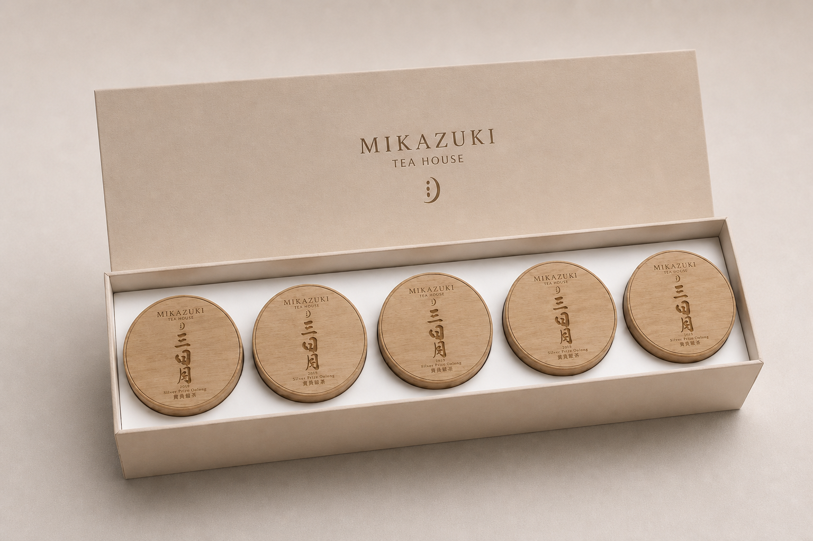
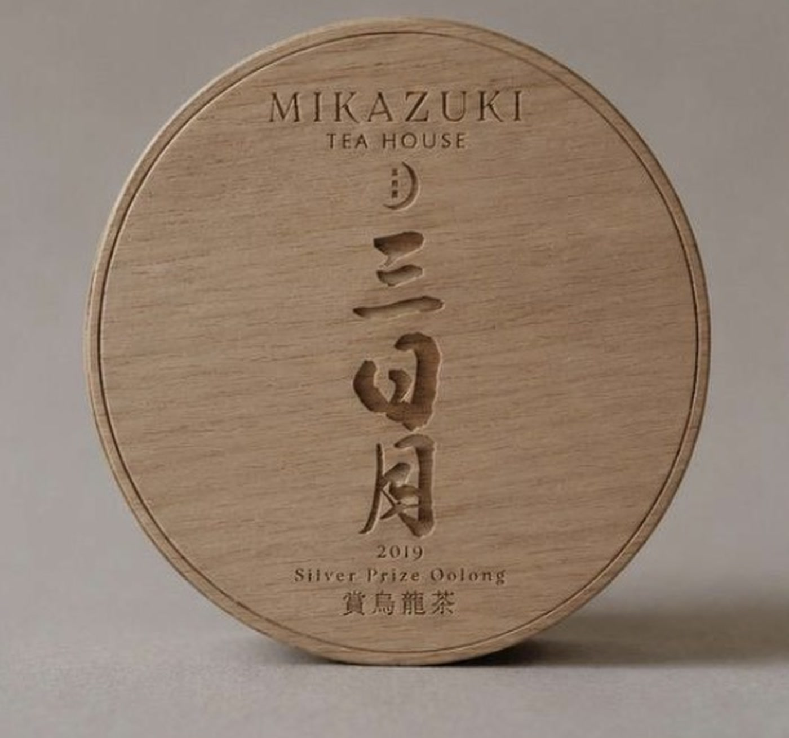
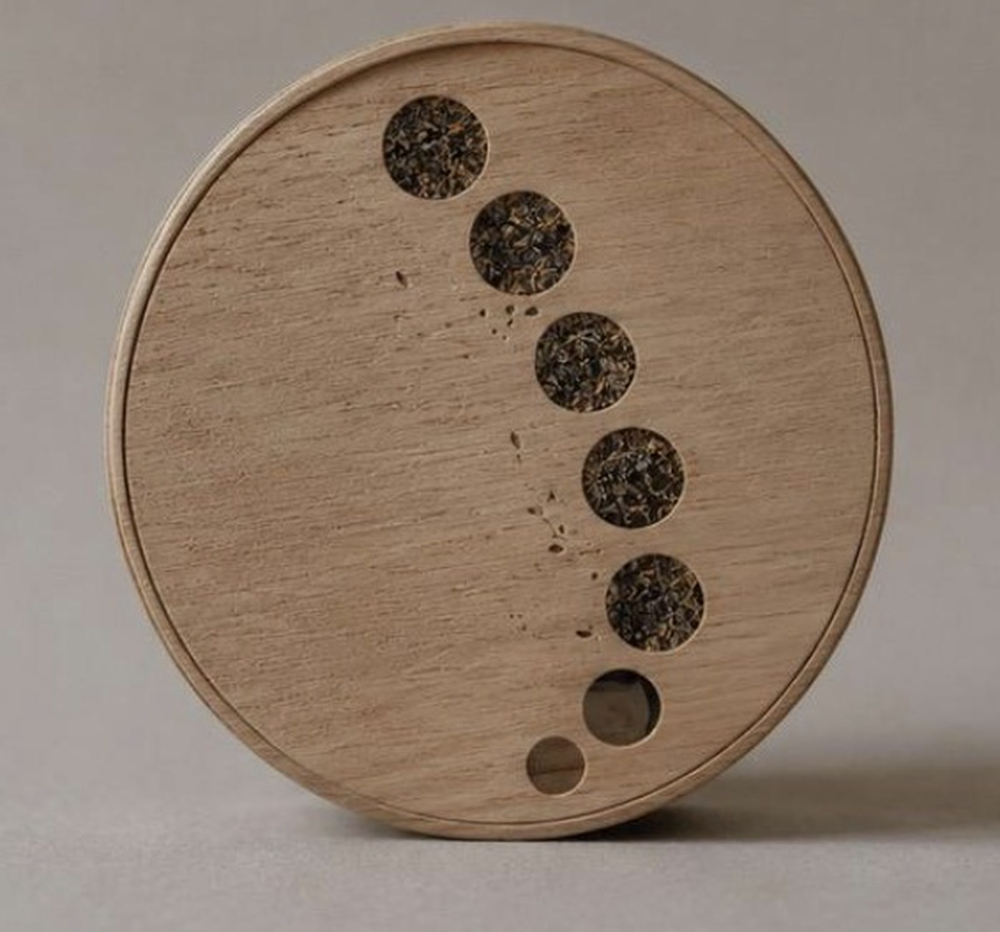
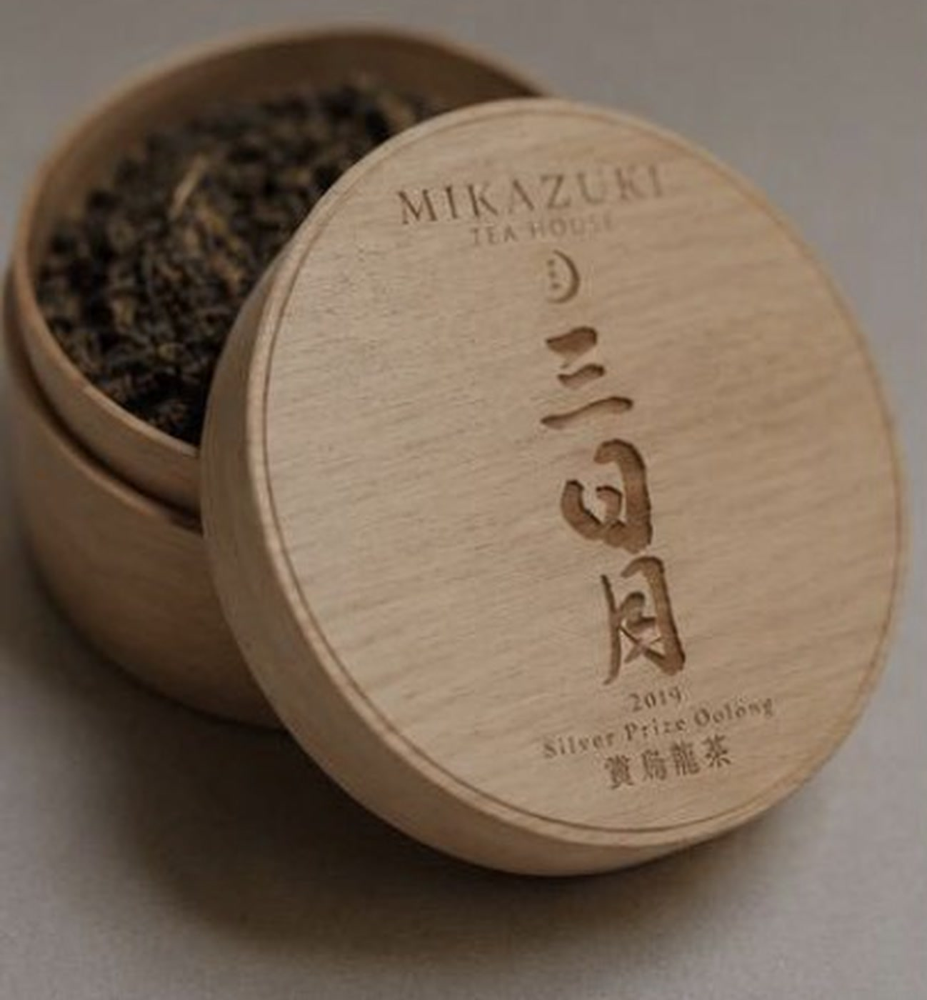
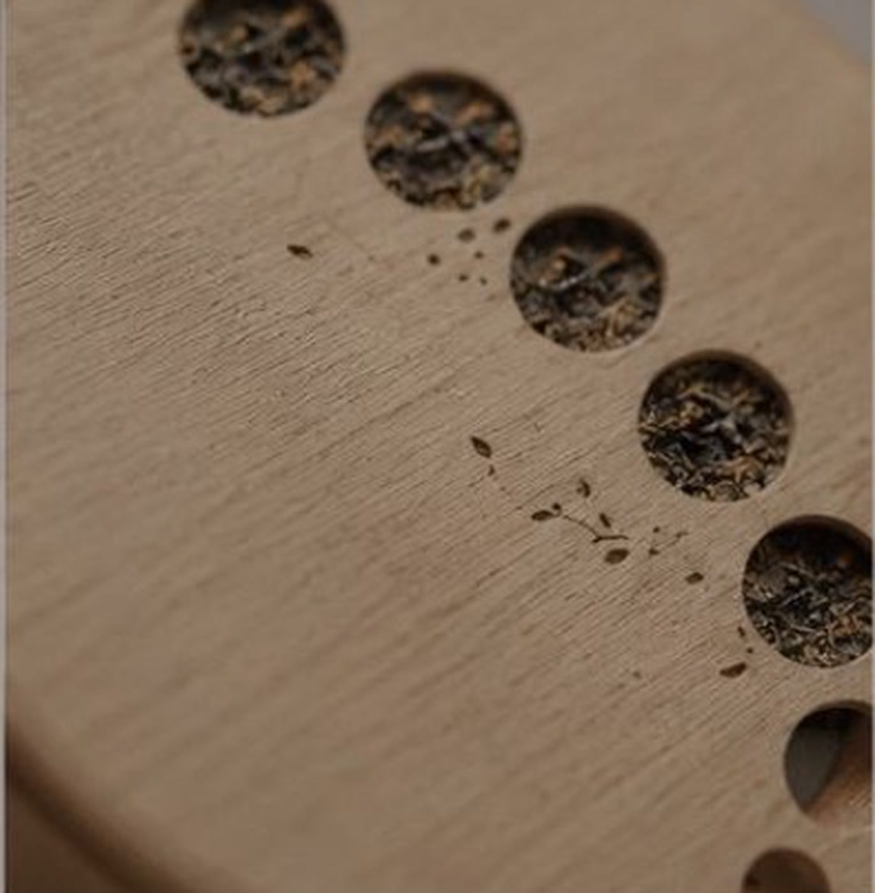

Brand identity · packaging · menu design
Mikazuki Tea House

01 · Identity and packaging
A visual system shaped by the crescent moon.





Commissioned by Kirameki Earth
Tea, moonlight, and the passage of time.
Kirameki Earth commissioned me to create a minimal menu and visual direction for Mikazuki Tea House in Kitahiroshima. Mikazuki means crescent moon, so the identity follows the moon as a quiet measure of time. Circular packaging, crescent-shaped openings, and the movement from closed to open evoke changing lunar phases, while the tea experience unfolds at an equally unhurried pace.
A translucent rice-paper layer gives the system softness and connects it to Kitahiroshima’s strong rice-growing culture and its celebrations of rice and harvest. Restrained typography, warm wood, and natural materials form a calm, tactile identity in which tea becomes a way of noticing time.